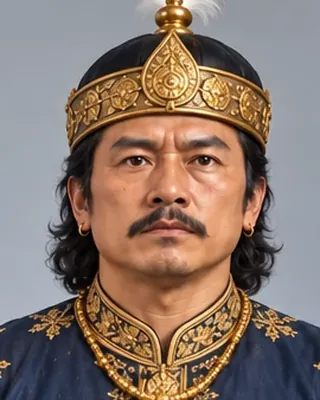

c. 1505
সুহুংমুং
1497–1539 · Fourteenth Ahom king

Expanded the kingdom for the first time since Sukaphaa, annexing Chutia and Dimasa territory and repelling the Bengal invasions of 1527 and 1532–33. First Ahom king to take a Hindu title, Swarganarayan.
Annexed Habung 1512; Chutia kingdom 1523–24; created the Borpatragohain post 1527; killed in his sleep in 1539 by his servant Ratiman.
Record confidence: high.
c. 1505

c. 1506

c. 1510

1510

1520

1523

c. 1527

1527–1531

1526–1531

1532

1532–1533

c. 1532

c. 1532

c. 1532

1532–1533

c. 1536

January 1539